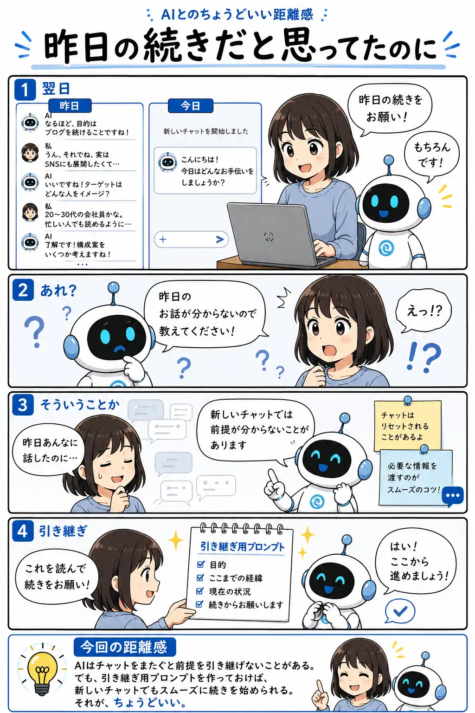

#058
昨日の続きだと思ってたのに
チャットは変わっても、前提は渡せる。

メモ
新しいチャットを開くと、前の会話の続きだと思っていても、AI側には必要な前提が見えていないことがあります。
そんな時は、全部を最初から説明し直さなくても大丈夫です。目的、ここまでの経緯、今の状況、次にしてほしいことを短くまとめた「引き継ぎ用プロンプト」を用意しておくと、続きを始めやすくなります。
会話を覚えてもらうより、必要な前提を渡す。少し面倒に見えて、長くAIを使うほど効いてくる工夫です。
今回の距離感
AIはチャットをまたぐと前提を引き継げないことがある。でも、引き継ぎ用プロンプトを作っておけば、新しいチャットでもスムーズに続きを始められる。それが、ちょうどいい。